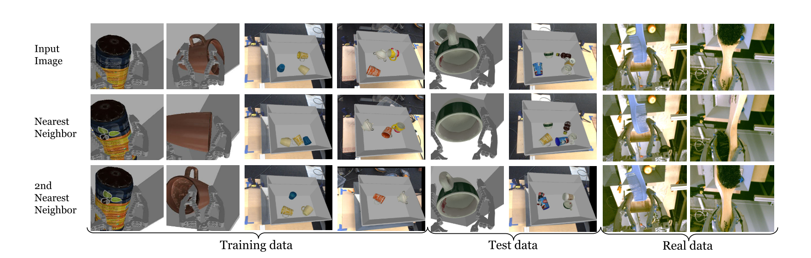
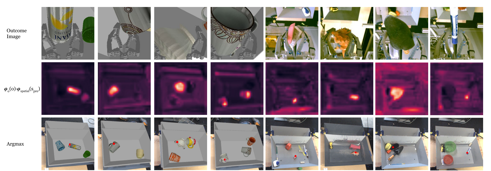

Paper Summaries and Notes
Grasp2Vec: Learning Object Representations from Self-Supervised Grasping
Eric Jang, Coline Devin, Vincent Vanhoucke and Sergey Levine
Source: https://arxiv.org/abs/1811.06964
Key Ideas:
- Learn a (self-supervised) structured visual representation based on object persistence- that the representation of a scene before and after an object is removed should be dependent on the features of the removed object. Formulated as a simple algebraic relationship: $\phi_s([\square \star \bigtriangleup]) - \phi_s([\square \quad \bigtriangleup]) = \phi_o([\star]) $
- Learning of structured representations of the objects and scenes enables a number of useful tasks such as identifying which object(s) in a scene were grasped, localizing them and performing goal-directed grasping tasks in a fully self-supervised manner without the need for human supervision.
Grasp2Vec
- Consider an image of a scene $s_{pre}$ with some objects. A robotic arm performs a grasp attempt. The resulting scene $s_{post}$ therefore has either the same objects as before, or fewer (depending on how many objects were picked up, if any). The robot holds up any grasped object(s) to a camera taking an outcome image $ o $.
- $\phi_s(s_{pre})$ and $\phi_s(s_{post})$ are vector embeddings of the scene images $s_{pre}$ and $s_{post}$ respectively. $\phi_o(o)$ is the vector embedding of the outcome object $ o $
- Framed as a metric learning problem, the embeddings $\phi_s$ and $\phi_o$ are to be learnt such that $\phi_s(s_{pre}) - \phi_s(s_{post}) $ is made close to $\phi_o(o)$, the embedding of the object that was grasped and far away from the embeddings of other objects that were not grasped.
- In order to learn the embeddings, a Convolutional Neural Network based on ResNet-50 is used for both embeddings with ReLUs and global average-pooling of features. The non-negativity constrains an object from being the inverse of another.
- The n-pair loss is used as a loss function so that in a given minibatch, the corresponding pairs of $\phi_s(s_{pre}) - \phi(s_{post}) $ and $\phi_o(o)$ of objects that were grasped are pushed together while all other objects in the minibatch are treated as "negative" embeddings and pushed apart. Since the loss is asymmetrical, it is evaluated in both orders as below: $ L_{\text { Grasp}2 \mathrm{Vec}}=\mathrm{NPairs}\left(\left(\phi_{s}\left(s_{pre}\right)-\phi_{s}\left(s_{post}\right)\right), \phi_{o}(o)\right)+\operatorname{NPairs}\left(\phi_{o}(o),\left(\phi_{s}\left(s_{pre}\right)-\phi_{s}\left(s_{post}\right)\right)\right) $
Self-Supervised Goal-Conditioned Grasping
- The goal-conditional grasping problem is framed as an MDP with an aim to learn $Q_\pi(s, a, g)$ where $ s $ is an image of the current scene, the action $ a $ controls the gripper's cartesian and open/close and the goal $ g $ specifies which object should be grasped. When an object specified by $ g $ is successfully grasped by the terminal state, a reward of 1 is given and 0 for all others.
- This sparse reward setting makes learning challenging due to the rarity of successful, rewarding grasps, especially at the beginning of training. To alleviate this, the following techniques are introduced
- Embedding Similarity: Provides a measure of how "close" an object $ o $ that was grasped is to the original goal $ g $. The Grasp2Vec representations can be used by setting $r = \hat{\phi_o}(g) . \hat{\phi_o}(o)$
- Posthoc Labelling: Uses ideas introduced in HER (Andrychowicz et al.). If a object $ o (\ne g)$ was unintentionally grasped, it is treated as the intentional goal and $(s,a,o,r = 1)$ is added to the replay buffer.
- Auxiliary Goal Augmentation: Samples an additional goal $g' (\ne g)$. If a goal g was successfully achieved, the embedding similarity is used to reward the auxiliary goal and $(s,a,g',r = \hat{\phi_o}(g') . \hat{\phi_o}(o))$ is added to the replay buffer.
Results
-
Grasp2Vec embedding: The results show that Grasp2Vec embeddings do work as intended.
- Scene embeddings $\phi_s$ capture object presence/absence and are unaffected by their location. This is verified by looking at the nearest neighbour images of the scenes in embedding space as shown in the image below, taken from the paper

- Embeddings can be used to identify which object was grasped by looking at the difference $\phi_s(s_{pre}) - \phi_s(s_{post})$. The same can also be used to localize the object as shown in the pictures below, also directly taken from the paper

- Results of both the nearest neighbour retrieval and localization perform significantly better using the embeddings rather than a baseline trained on ImageNet.
- Scene embeddings $\phi_s$ capture object presence/absence and are unaffected by their location. This is verified by looking at the nearest neighbour images of the scenes in embedding space as shown in the image below, taken from the paper
-
Goal-Conditional Grasping: An ablation study whose results are shown in the table below (acquired from the paper ) show a number of interesting results in the simulated goal-conditional grasping experiments.
- The Posthoc Labelling on its own propel grasp performance from $ 18.3\% $ to $50.4\%$.
- When combined with the use of Embedding Similarity of Grasp2Vec features as rewards, it achieves an $80.1\%$ success rate for seen objects.
- The use of Auxillary Goal Augmentation appears to aid in generalization and improves grasp performance on unseen objects at a slight cost to its performance on seen objects.
- Interestingly, when the goal specification is provided as an object embedding, it hurts performance slightly suggesting embeddings hurt generalization.
| Goal Conditioning | Reward Labels | Seen Objects | Unseen Objects |
|---|---|---|---|
| Indiscriminate Grasping | N/A | 18.3 | 21.9 |
| Raw Image CNN | Oracle Labels | 83.9 | 43.7 |
| Raw Image CNN | PL | 50.4 | 41.1 |
| Raw Image CNN | PL + Aux(0) | 22.1 | 19.0 |
| Raw Image CNN | PL + ES (autoencoder) | 18.7 | 20.9 |
| Raw Image CNN | PL + ES (grasp2vec) | 80.1 | 53.9 |
| Raw Image CNN | PL + Aux + ES (grasp2vec) | 78.0 | 58.9 |
| $\phi_o(g)$ | PL + ES (grasp2vec) | 78.4 | 45.4 |
Comments
Comments powered by Disqus